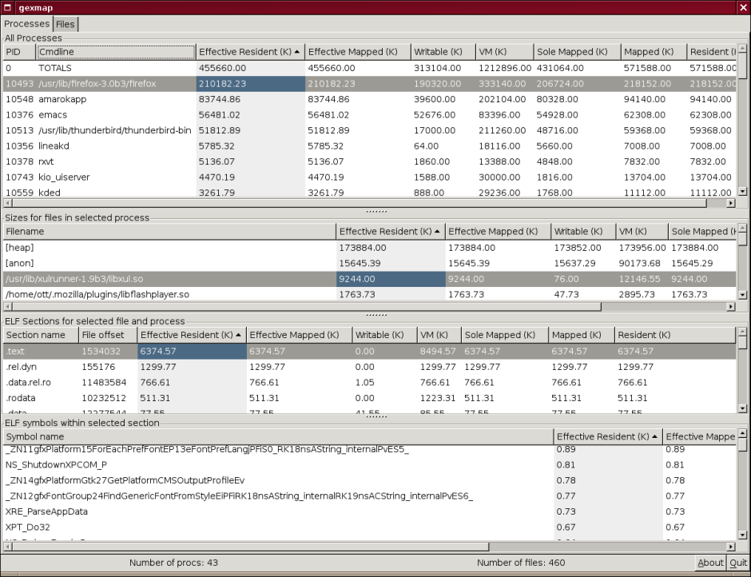

Exmap — это утилита, которая позволяет провести анализ реального использования оперативной памяти запущенными процессами. Для получения этой информации используется модуль для ядра Linux, информация из которого может быть получена пользовательской программой.
Для файлов с отладочной информацией, можно получать информацию детализированную на уровне отдельных объектов программы (symbol-level), а для остальных программ информация детализируется на уровне секций (section-level).
Для анализа собранных данных существует несколько программ. В поставку exmap входит
программа gexmap, которая использует графический интерфейс пользователя для отображения
информации. Кроме того, существует программа exmap-console, которая позволяет получать
информацию от модуля ядра, используя командно-строковые утилиты.
В некоторых дистрибутивах Linux, этот пакет можно установить из репозитория, а для остальных пользователей надо лишь скачать исходные тексты с сайта exmap, распаковать их и выполнить пару команд:
makegexmapsudo insmod kernel/exmap.koПосле выполнения этих команд, пользователь может начать использовать программы-анализаторы для получения информации о запущенных процессах.
В поставку exmap входит графическая утилита gexmap, которая используется для графического
представления данных, собранных модулем ядра. Пример использования этой программы вы
можете увидеть на скриншоте.

Как видно на рисунке, информация разбивается на несколько частей:
ELFELFТаким образом, пользователь может получать информацию о потреблении памяти программой и/или отдельным компонентом программы.
Использование графического интерфейса не всегда удобно для разработчика. Поэтому, была разработана отдельная программа exmap-console, которая реализует командно-строковую утилиту для получения информация от модуля ядра, а также программу для удаленного доступа к модулю ядра.
Установка данного пакета достаточно проста — необходимо скачать исходные тексты с
домашней страницы проекта, распаковать и выполнить стандартную последовательность
(./configure ; make ; make install) для сборки и установки программы.
После сборки пользователю становятся доступны несколько команд:
exmapexmapserver.exmapserverexmapdexmap со сбором информации в указанном
каталоге.Подробную информацию об использовании этих программ вы можете найти в справочных страницах, которые поставляются в составе пакета.